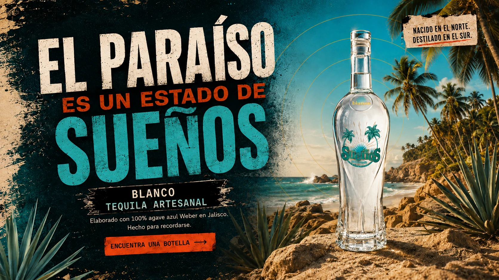
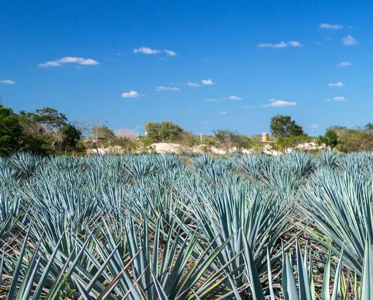
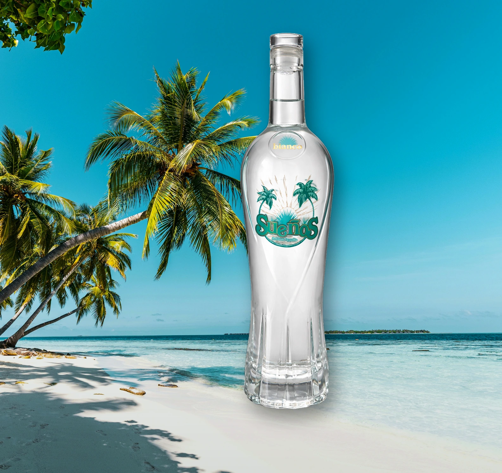

100% Agave Azul Weber
Cultivado en el suelo volcánico de Jalisco.

Elaborado en Jalisco, México, con 100% agave azul Weber. Sueños es de propiedad canadiense, tiene raíces en Columbia Británica y se embotella a 40% Alc./Vol.
Cultivado en el suelo volcánico de Jalisco.
Producido y embotellado en México.
Fundado en Columbia Británica.
Agave fresco, cítricos, notas minerales y un final limpio.
Sueños nació de la conexión de Gord Erickson con México y de una idea sencilla: el paraíso debería sentirse más cerca de casa. De propiedad canadiense y elaborado en Jalisco, Sueños Blanco está hecho para mesas compartidas, tardes de luz prolongada y noches comunes que vale la pena recordar.
Lee Nuestra Historia

Desde una Margarita clásica hasta el Don Terry, descubre recetas sencillas que mantienen a Sueños Blanco al centro.

Brillante, clásica y con el tequila al frente.
Ver Receta →
Cítrico fresco, burbujas y energía de terraza.
Ver Receta →
Más profundo, lento y hecho para la noche.
Ver Receta →
Un clásico cítrico con un final de atardecer.
Ver Receta →
Limpio, refrescante y perfecto para tardes calurosas.
Ver Receta →
Jengibre, lima y un poco de drama en taza de cobre.
Ver Receta →
Fruta oscura, jengibre y un poco de carácter.
Ver Receta →
Toda la energía cítrica en un jarrito de barro.
Ver Receta →
Con protagonismo de piña y un aire tropical elegante.
Ver Receta →
Tequila, piña y soda.
Ver Receta →Busca por ciudad, código postal o ubicación actual para encontrar tiendas participantes cerca de ti. El inventario puede cambiar, así que confirma la disponibilidad directamente con la tienda.
Confirma que tienes la edad legal para consumir alcohol en tu ubicación.